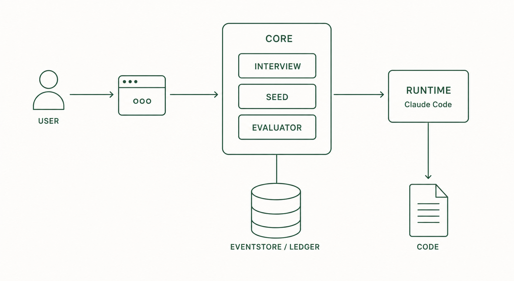

03
3. Components
Ouroboros splits into a command entry point, a management engine, a work spec, an execution layer, a record store, and an evaluator.

3.1 What each component does
| Component | Role |
|---|---|
| You | Provide the idea, answer questions, approve the Seed and the result. |
ooo command | The entry point for Ouroboros features inside a Claude Code session, e.g. ooo interview, ooo run. |
| Core | The engine that runs the Interview, generates Seeds, manages execution order, and calls evaluation. Talks to the runtime over MCP (Model Context Protocol). |
| Seed | A YAML work spec holding goal, constraints, completion criteria, and data structure. It does not change during a run. |
| runtime | The AI coding tool that actually touches files and code. Claude Code is the default; Codex CLI, OpenCode, and others are supported. |
| EventStore | A local SQLite database storing every execution event. Used to recover interrupted sessions. |
| Ledger | A record of the assumptions and exclusions confirmed while questioning and writing the Seed. |
| Evaluator | Verifies results in three stages: run the tests, compare against the completion criteria, and cross-check with multiple models when needed. |
3.2 Data flow
- You enter an idea through the
ooocommand. - Core asks about missing decisions in the Interview and turns the answers into a Seed.
- Core hands the Seed to the runtime, and the runtime writes the code.
- The Evaluator compares the result against the Seed's completion criteria.
- Every step's events go to the EventStore; decision grounds go to the Ledger.
Because Core and the runtime are separate, the same Seed can be used with a different runtime.
3.3 Storage locations
Ouroboros stores its data under ~/.ouroboros/ in your home folder.
| File / folder | Content |
|---|---|
config.yaml | Main configuration, including the runtime choice |
seeds/ | Generated Seed YAML files |
ouroboros.db | EventStore (SQLite) |
logs/ouroboros.log | Logs |
data/, worktrees/ | Auto-session state and isolated work folders |
Depending on your choices, the project folder may gain a CLAUDE.md command summary and a .ouroboros/ configuration.